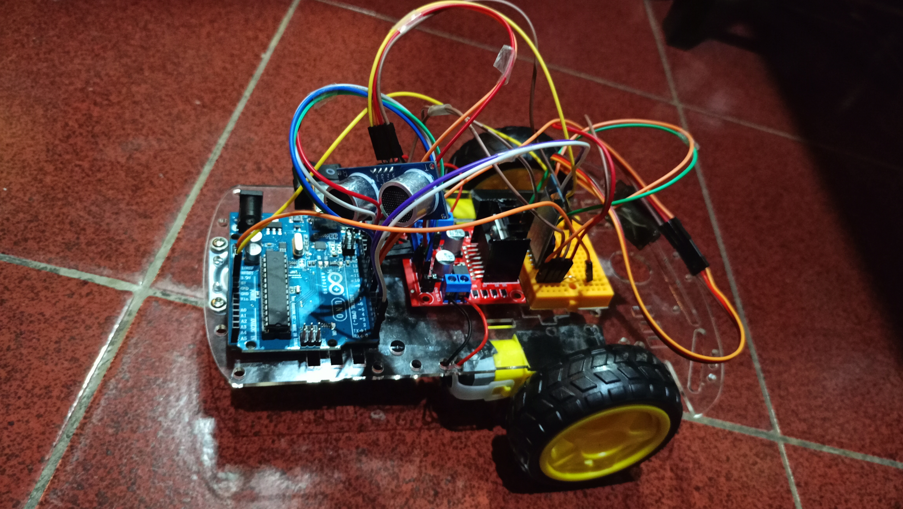
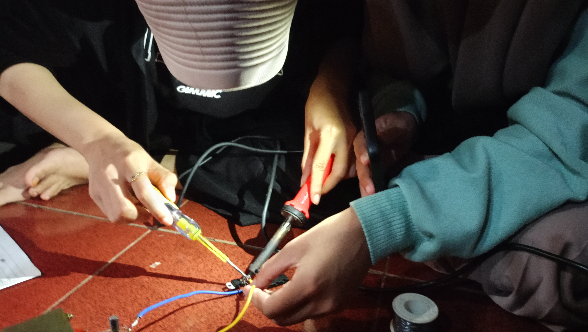

"believe in yourself and you will be unstoppable"
Mengenal Teknologi Lebih Dekat |
|
Masuk ke dalam dunia IT menjadi salah satu mimpi saya sejak duduk di bangku SMA. Ketertarikan dengan kemajuan teknologi membawa saya mendaftarkan diri untuk melanjutkan pendidikan ke perguruan tinggi dan lulus melalui jalur SNBT di Universitas Negeri Makassar program studi Teknik Komputer. Berlatar belakang lulusan sekolah menengah atas, saya sama sekali belum mempelajari hal-hal yang berhubungan dengan perangkat lunak maupun perangkat keras. Dengan bekal pengetahuan terbatas terkait istilah - istilah pada bidang teknologi, saya memberanikan diri untuk mencoba dan mempelajari hal baru pada bangku kuliah. Masuk tahun kedua berkuliah di Teknik Komputer, saya sudah belajar software maupun hardware dan mengikuti beberapa kegiatan jurusan. Walau selama proses perkuliahan rasanya tidak mudah, namun saya akan terus belajar hal baru dan berharap suatu saat dapat lulus dengan nilai yang memuaskan serta menjadi ahli dalam bidang teknologi. |
Daftar Mata Kuliah yang telah dipelajari:
|
Daftar Dosen :
|
|
Foto Kegiatan   |
| No | Nama | Jenis Kelamin | Alamat | Asal Sekolah | |
|---|---|---|---|---|---|
| Lengkap | Panggilan | ||||
| 1 | Inggrid Adellia | Inggrid | Perempuan | Jl. Damai Ongkoe | SMAS Angkasa Lanud Sultan Hasanuddin |
| 2 | Sadva Anargya | Sadva | Laki-Laki | Jl.Cokonuri 1A | SMA Kartika XX-I Makassar |
| 3 | Alia Amini Azhar | Alia | Perempuan | Jl. Toddopuli 6 | SMK Telkom Makassar |
| 4 | Andi Adbiyah Kurnia Dela | Dela | Perempuan | Jl. Greder No. 9 | SMKN 6 Bulukumba |